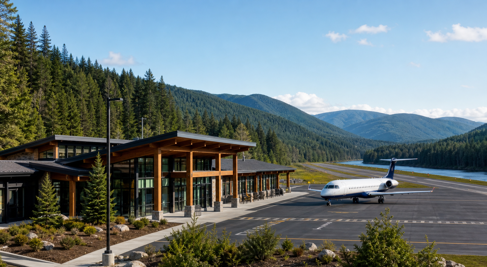
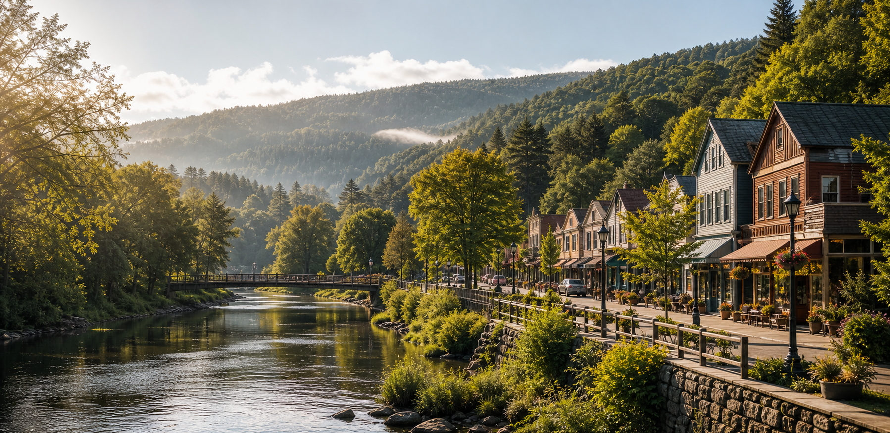
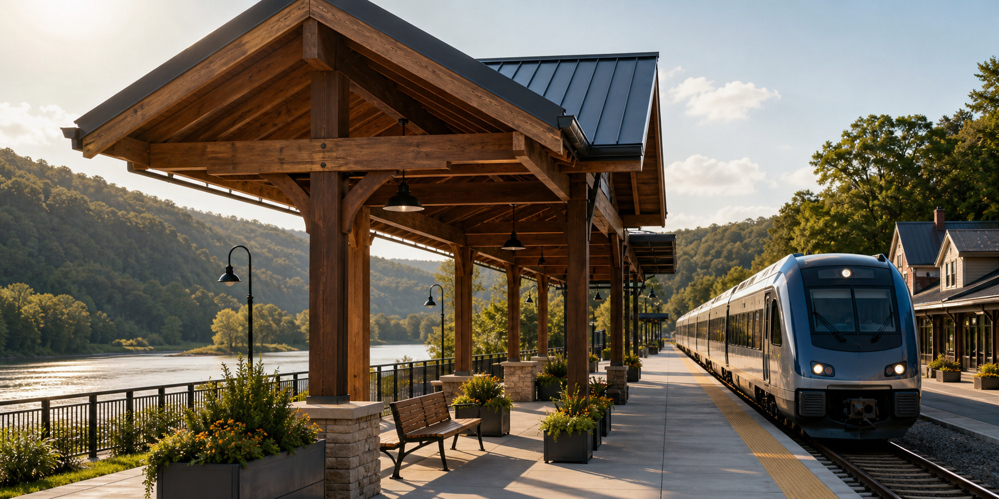
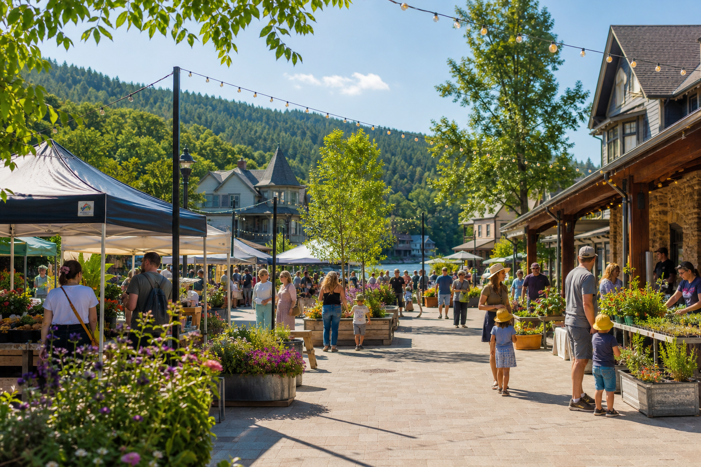

Lumberville International Airport
Expanded regional access with a terminal that feels more lodge than labyrinth.
See the airport plan
Welcome to the bend in the river
Lumberville is a fictional town with a very real plan: make it easier to arrive, linger, shop local, and keep our parks sparkling for everyone.
Deep forest, clear purpose
Set between a broad river and miles of woodland, Lumberville is growing carefully. Our improvement plan connects regional travel, downtown gathering places, and community stewardship while keeping the town charming enough to make squirrels file envy reports.

Expanded regional access with a terminal that feels more lodge than labyrinth.
See the airport plan
A riverfront rail hub designed for easier commutes, visits, and weekend escapes.
Visit the rail plan
More shade, more seating, and more reasons to stroll with a pastry.
Tour the square